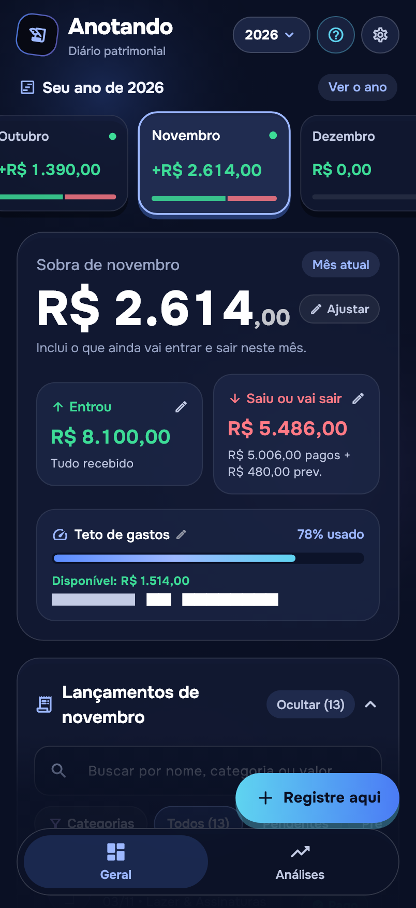

100% Offline-First
Todos os lançamentos, saldos e metas ficam salvos apenas no armazenamento local do seu aparelho. Sem servidores próprios, sem contas obrigatórias e sem anúncios.
O Anotando: Controle de Gastos une controle financeiro simples, metas mensais por categoria, backup seguro .anotando (GZip + SHA-256), proteção de tela FLAG_SECURE e backup opcional no seu próprio Google Drive.

Projetado para funcionar 100% offline por padrão, com recursos avançados de integridade, privacidade e acessibilidade.
Todos os lançamentos, saldos e metas ficam salvos apenas no armazenamento local do seu aparelho. Sem servidores próprios, sem contas obrigatórias e sem anúncios.
Painel anual e mensal com fluxo de caixa, parcelas, recorrências, alertas de vencimento e metas mensais por categoria.
Formato próprio compactado com GZip e verificado por hash SHA-256. Antes de qualquer restauração, um Safety Snapshot local protege seu estado atual.
Conecte sua Conta Google apenas se desejar. O app usa exclusivamente o escopo isolado drive.appdata para salvar e restaurar seu .anotando na sua pasta oculta.
Bloqueio nativo no Android (FLAG_SECURE) contra capturas e gravações, além de ocultação da prévia financeira no seletor de multitarefa no Android e no iOS.
Modo de leitura ampliada com fontes maiores e maior contraste, além de exportação local de planilhas Excel (.xlsx) e resumos.
Clique em qualquer captura abaixo para ampliar e navegar pelas principais telas do aplicativo.